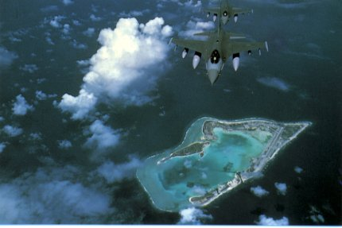

|
Flash ! DX
|
|
|
Flash ! DX
|
[Back Issues Jul.2003]
TIME:UTC(JST-09:00)
Report from JA1RJU (PM95sq)
31.Jul.2003(15:00d)
*BY-TV 00:00- 49.750 --
HL5BMX 03:15 50.119 SSB
HL5BMX 06:35 50.118 SSB
| ◎ 関東地方は梅雨も明けないうちにいよいよ8月に入ってしまう。 8月に入るとEsの発生も弱まってくるので、これからのEsのマルチホップの伝搬は激減する。 中旬を過ぎるとTEPによるVK方面を中心にちらほら秋のDXが聞こえ始めるが、 サイクル23もかなり下降してしまった今秋は"足の長い"DXはあまり期待出来そうにない。 |
30.Jul.2003(15:00c)
*BY-TV 00:00- 49.750 --
*P5-AM 07:10- 48.250 AM (9.650MHz×5)
29.Jul.2003(15:00d)
*BY-TV 23:00- 49.750 --
*BY-TV 03:00- 49.750 -- weak
KG6DX 07:30 50.110 CW
VK6JQ 08:15 50.110 CW
KG6DX 08:40 50.110 CW weak
28.Jul.2003(15:00c)
*BY-TV 00:00- 49.750 --
|
◎ 25日から下降ぎみだった6mのコンデションは、遂に近場のDXの入感もない一日となった。
あれほど賑わっていたヨーロッパと北米大陸間のパスもここにきてガックリ落ち込んでいる。 唯一、賑わっているのはDX-PeditionのCY9A(St・Paul Is)が入感している北米の中・東部だけ？。 |
27.Jul.2003(15:00e)
*BY-TV 00:00- 49.750 --
BV2B/BV9W 00:35 50.110/120 CW QSL via BV2KI
BV2B/BV9W 00:57 50.110 CW
JD1YAB 00:59 50.130 CW
BV8YB 01:00 50.115 CW
BV2B/BV9W 01:10 50.102 CW
UA0CQ 02:32 50.110 CW/SSB (QSY to 144.110MHz)
JR8XXQ/JD1 04:30 50.162 CW/SSB Minami Torishima
UA0SC 05:30 50.115 CW/SSB
UA0SC 07:30 50.115 CW
BG9BA 09:01 50.110 CW
UA0SC 09:02 50.110 CW
26.Jul.2003(15:00d)
*BY-TV 23:00- 49.750 --
BV2B/BV9W 00:35 50.110/115 SSB QSL via BV2KI
JR8XXQ/JD1 03:25 50.182 CW Minami Torishima
UA0CQ 08:40 50.104 CW
25.Jul.2003(15:00d)
*BY-TV 00:00- 49.750 --
BV8BC 03:25 50.116 CW
BV2/JA3AQM 04:17 50.120 SSB
|
◎ 午前中の北米とのオープンは無かった。
午後になって北米(W7)から、クラスターを通じて"弱いJA"が聞こえているとのリポートが上げられたが、
QSOの確認はされていない。夕方、LZ3RXからJA5のCQが559で入感していたとのりポートがあった。
"金曜日のYA4F"は残念ながらQRVしていなかった。
◎[訂正] 昨日のJG2BRIとW5OZIのQSO記録でW3EPが距離計算に使ったグリットロケーターに誤りがあった。
JG2BRI・千田さんの正しいGLは"PM84LW"で、このGLで計算すると手持ちの測定ソフトでは10,647Kmとなり、
昨日の値の10,910Kmから263Km短くなる。 |
24.Jul.2003(15:00d)
*BY-TV 23:00- 49.750 --
W5OZI 00:47 50.110 CW worked JA1.2
BD6RAV 05:58 50.110 SSB
BG9BA 06:08 50.110 CW
*P5-AM 07:30- 48.250 AM (9.650MHz×5)
UA0SC 12:15 50.112 CW
UA0SC 12:38 50.112 CW/SSB
UA0SC 13:50 50.111 CW
|
◎ 午前中に北米テキサス州のW5OZIが入感した。
2エリアの局のCQに応答してきたこの局とQSO出来たのはJA1、2エリアの僅か5局だけで、
オープンしていた時間も5分程の短いものだった。 しかし、この短いオープンはEsシーズンのこの時期の"遠距離QSO"の記録となりそう。 QSOの直後に北米側(W3EP)から、クラスターを通じて、QSOしたJG2BRI(PM74aa)とW5OZI(EM00cl)間の距離は10,888Kmあり、 "Long Es Distances(Longest Ever Es)"ではないかというものだった。 手持ちのソフトの測定でも10,910Kmとなり、確認されている従来の記録を上回るもの。 F2によるQSOでは赤道越えのパスやロングパスなど10,000Kmを超えるQSO距離は珍しいものではないが、 Esシーズンに10,000Kmを超えるQSOは非常に稀なパスとなる。 もちろんEsシーズンのパスが全てEs層によるものとは限らないので、この記録を疑問視する向きもあるが、 春、秋のDXシーズン以外での遠距離QSOとして記録するのも意味のある事かも知れない。
---------------------------------------------
[参考/ 記録されている"Esシーズン"の遠距離QSO]
○ 1981年7月9日
WA5LIG(EM13)- JA1(PM95sq) 10,358Km
○ 1998年7月20日
N5JHV(DM62oh)-JA4(PM64ro) 10,263Km
○ 2000年7月1日
KA9CFD(EN40om)-JA1(QM05) 10,097Km
N5KW(EM25ir)-JA1(QM05) 10,246Km
○ 2003年7月6日
W6QUV(CM98ho)-JR6(PL36) 9,895Km
○ 2003年7月20日
9H1XT(JM75gv)-JA1(QM06ad) 10,247Km
○ 2003年7月20日
9H1GB(JM75fu)-JA7(QM07lp) 10,183Km
○ 2003年7月24日
W5OZI(EM00cl)-JG2BRI(PM84lw) 10,647Km
--------------------------------------------
北米-ヨーロッパ & アフリカ間の伝搬状況は"OH2AQ Kolumbus Cluster"のリポートを参照。
|
23.Jul.2003(15:00d)
*BY-TV 23:00- 49.750 --
(W6YLL 00:25 50.110 CW JA2)
W6YLL 00:29 50.105 CW CM97
W6YLL 00:32 50.115 CW
HL3IUA 00:56 50.110 CW
BG9BA 02:19 50.110 CW
*BY-TV 09:00- 49.750 --
|
◎ 午前中に短い北米のオープン。W側もJA局のCQに応答してくるだけで、QSO後もパイルになることも無い。
今日も信号は弱く地域性のあるオープン。
午後の大陸方面のコンデションは昨日よりも下降。北米大陸とヨーロッパ大陸間のパスはFBに続いている。 北米-ヨーロッパ & アフリカ間の伝搬状況は"OH2AQ Kolumbus Cluster"のリポートを参照。 |
22.Jul.2003(15:00d)
*BY-TV 23:00- 49.750 --
K6QXY 23:54 50.105 CW
(N6JV 00:00 50.103 CW JA6)
K6QXY 00:03 50.106 CW JA1.2
(K6QXY 04:44 50.110 CW JA1.2)
(N9JIM/6 04:50 50.110 CW CM87→JA1.2)
(W6BYA 05:02 50.110/105 CW JA1.2.7)
|
◎ 午前中と午後に短い北米のオープンがあった。信号は微弱で地域性のあるオープン。
午後の大陸方向からのバズは強力だったものの、夕方のヨーロッパ方面のオープンは無かった。 相変わらず北米大陸とヨーロッパ大陸間のパスはFBに続いている。 北米-ヨーロッパ & アフリカ間の伝搬状況は"OH2AQ Kolumbus Cluster"のリポートを参照。 |
21.Jul.2003(15:00d)
*BY-TV 00:00- 49.750 --
BV2/JA3AQM 02:08 50.112 CW
DS2UEN 03:35 50.110 CW
DS1CCU 03:50 50.116 CW
BO2LH 08:38 50.115 SSB
UA0CQ 08:56 50.107 CW
UA0SC 12:07 50.112 CW
|
◎ 昨夜は日付が変った深夜過ぎまでUA0SC(GL=OO06fd)がFBに入感するなどコンデションの持続が期待されたが、
残念ながら今日のヨーロッパ方面のオープンまでは続かなかった。 今回のこのFBなコンデションは、その後北米大陸とヨーロッパ & アフリカ大陸間のオープンとして続いた。 昨日のJA-9Hの10,000Kmを超えるQSOにも見られる様に、 この時期としては珍しい別大陸間のDXオープンのリポートが連日クラスター上を賑わしている。 北米-ヨーロッパ & アフリカ間の伝搬状況は"OH2AQ Kolumbus Cluster"のリポートを参照。 |
20.Jul.2003(16:00e)
*BY-TV 00:00- 49.750 --
UA0CQ 07:37 50.110 CW
(UX0FF 07:45 50.136 CW JA7 QM07)
UA0SC 07:59 50.114 CW
UX0FF 08:05 50.115/105 CW
(UT1FA 08:34 50.100 CW JA1 QM06)
(Z32ZM 08:37 50.103 CW JA1 QM06)
UA0SC 08:38 50.113 SSB
(UT1FA 08:47 50.100 CW JA7 QM08)
(9H1XT 08:58 50.102 CW JA1 QM06)
9H1GB 08:59 50.102 CW
(UY5QQ 08:12 50.090 CW JA7 QM08)
(SP6GWB 09:13 50.100 CW JA1 QM05-06)
(LZ1AQ 09:13 50.104 CW JA1 QM06)
(LZ3RX 09:18 50.104 CW JA1 QM06)
(9A2DS 09:27 50.104 CW JA1 QM06)
SP7KN 09:36 50.104 CW
UA0SC 13:40 50.113 CW/SSB
UA0SC 14:30 50.112 CW
UA0SC 15:02 50.111 SSB
UA0SC 15:40 50.111 CW/SSB still good!
|
◎ 8時間以上も大オープンした昨日の中近東・西アジアとヨーロッパ間のオープンとは比較にならないものの、
今日は午後からJAにも今シーズン初のヨーロッパの入感があった。
最初のオープンは07:45z頃に50.136MHzでJA7に入感してきたウクライナのUX0FFだった。 UX0FFはこのオープンから30分ほど遅れて1エリアでも50.115/105MHzで入感し始めた。 信号は強かったが入感エリアはかなり狭い範囲で移動していた。 UX0FFはコンテストに参加していたため、リポートと共にコンテストナンバーのグリットロケーター(QTH)を求められ、 まごついている局も多かった。 このオープン後にJA側から出された"CQ"に対してUT/UY、LZ、9H、Z32、9A、SPなど東欧エリアが呼んできた。 しかし、信号は弱く入感エリアも地域性があり、 JA1ではQM05、06(一部PM95/96)の太平洋側から北関東、JA7は南東北(QM08)、JA0(新潟)のPM96付近が中心だった。 09:40z頃にコンデションはダウンしたが、フェードアウト直前に1エリアの局(QM06)のCQに応答してきたSP7KNは、 神奈川、東京、埼玉で強力に入感していたが、既にQM06では信号は確認出来なかったとの事。 今後もヨーロッパのオープンに期待したいが、一時的ながら活発化していた太陽活動は徐々に下がり始めた。 JAにオープンしていた時間帯のヨーロッパの状況は"OH2AQ Kolumbus Cluster"のリポートを参照。 |
19.Jul.2003(15:00d)
*BY-TV 23:00- 49.750 --
JD1YAB 01:44 50.120 CW
VR2XMT 03:26 50.110 SSB
DS2LNR 03:56 50.107 CW
HL5XF 04:20 50.130 CW/SSB
*VK-TV 08:30- 46.172/240 --
JD1BKZ 08:50 50.240 SSB
|
◎ 昨日午後のYA4F(アフガニスタン)の入感で期待された大陸方面のコンデションだったが、
今日は近場のDXの入感も少なく淋しい一日だった。
YA4Fは"イスラムの休日"の金曜日にアクティビティがあるので知られているが、
たまたまこの休日にコンデションが上昇したのがJA局には幸いした。 一方、落ち込んだ今日のJAのコンデションとは逆に、中近東からヨーロッパにかけての6mは異常とも言えるFBな伝搬が続いた。 "OH2AQ Kolumbus Cluster"に刻々とリポートされるQSOの様子は06:00z少し前から始まった。 昨日のYA4FこそQRVしていないものの、東欧全域をはじめ、中近東エリアのJY9NX、4X/4Z's、5B4's、A71EM、A61AH、HZ1MD、SU1SKなどが、 北欧から西ヨーロッパのU.K付近までの"ヨーロッパ全土"が入り乱れてQSOしている様子がリポートされている。 このオープンは14:00z過ぎまで続いた。 これらの伝搬は3,500-4,500Km程度パスが中心だが、近場にDXの相手が少ないJAに比べると全く羨ましい限りだ。 昨日のYA4FのパスがJAとヨーロッパの広い範囲に同時にオープンしていたことから察して、 この伝搬はマルチホップのEsと言った単純なものではなく、F2層の絡んだ"複雑"な伝搬と考えられる。 太陽活動も一時的ながら活発化している。 |
18.Jul.2003(15:00e)
*BY-TV 00:30- 49.750 --
BG9BA 01:18 50.110 CW
BG9BA 01:45 50.110 CW
DS1CCU 03:53 50.117 CW
VR2XZK 04:03 50.110 SSB
YA4F 06:32 50.110 CW good sig !
YA4F 06:38 50.116/115 CW/SSB
DS1CCU 07:33 50.114 SSB QSO with YA4F
YA4F 07:44 50.114 SSB F.out
HL5BMX 08:17 50.110 SSB
BG9BA 09:08 50.110 CW
|
◎ 06:30z頃から突然アフガニスタンのYA4Fが入感してきた。
50.110MHzのCWで聞こえ始めた当初は、1エリア(PM95)での信号は強かったが大陸方面からのバズのQRMも強かった。
YA4F側でもTVのバズのQRMが有るのか2度、3度と周波数を変更しながらJAを捌いていた。 50.116→50.114MHzとQSYしながらSSBでQRVしてくれた後半は、QSBがあるもののバズのQRMは少なくなり比較的受信状態は良かった。 YA4Fは春、秋のDXシーズンには西日本を中心に入感しているが、Esシーズンのこの時期にオープンしたのは今回が初めて。 東日本ではスキャッターによる伝搬が主で、QSOの困難な局だったため、今回のオープンで"New"を増やした局は多かったものと思われる。 JAとのオープンがまだ続いている07:40z頃からYA4Fの信号はヨーロッパにも入感し始めたらしく、 07:44頃にアンテナをヨーロッパ方向に回してしまい、この時点でJAには聞こえなくなってしまった。 |
17.Jul.2003(15:00d)
*BY-TV 00:00- 49.750 --
VR2SIX 00:20- 50.075 CW Beacon
BG9BA 04:33 50.115/110 CW
DU1EV/B 08:15- 50.008 CW Beacon
16.Jul.2003(15:00d)
*BY-TV 23:00- 49.750 --
BG9BA 23:57 50.110 CW
JT1CO 00:22 50.114 CW
BG9BA 00:27 50.110 CW
VK6RSX 12:10- 50.304 CW Beacon
*VK-TV 12:10- 46.172 --
VK8MS 12:19 50.110 CW
VK8MS 12:25 50.110 SSB
15.Jul.2003(15:00d)
*BY-TV 22:00- 49.750 --
(KH7R 22:10 50.110 SSB into JA8)
KH7R 22:34 50.110 SSB weak
*BY-TV 00:00- 49.750 --
14.Jul.2003(15:00d)
*BY-TV 23:50- 49.750 --
*9M-TV 23:50- 48.240/260 --
UA0SC 23:50 50.112 CW
VR2UW 00:14 50.110 CW
DU1EV/B 00:15- 50.008 CW Beacon
DU1EV/B 08:45- 50.008 CW Beacon
VR2SIX 08:45- 50.075 CW Beacon
VR2XMT 12:19 50.110 SSB
13.Jul.2003(15:00c)
*BY-TV 00:00- 49.750 --
HL1AEY 01:07 50.110 CW
UA0CQ 01:37 50.110 CW
BG9BA 01:42 50.110 CW
UA0SC 02:20 50.112 CW
12.Jul.2003(15:00e)
*BY-TV 00:00- 49.750 --
BG9BA 00:45 50.110 CW
VR2BG 01:29 50.110 SSB
HL5BMX 01:36 50.110 SSB
VR2BG 01:59 50.100 CW
VR2UW 02:25 50.097 CW
BV2NT 02:30 50.115 SSB
DS1CCU 06:35 50.115 CW
DS4DBF 09:15 50.107 CW
HL1LTC 09:22 50.107 CW
DS4DBG 09:23 50.285 SSB
HL2DBP 09:30 50.247 SSB
DS2TXG 09:45 50.100 CW
HL1AZH 09:46 50.103 CW
HL2NH 09:55 50.120 SSB
UA0SC 11:40 50.112 CW
11.Jul.2003(15:00b)
*BY-TV 00:00- 49.750 --
|
◎ あの、JA1AHSが復活！ "JA1AHS"と言えば1956年1月22日にオーストラリアのVK4NGとQSOして、日本から初の"50MCのDX-QSO"の記録を残した局として知られている。 このJA1AHSの"懐かしい"コールサインを7月6日の朝、50MHz帯で受信、QSO出来た。 既にお気づきの通り、この局はJA1エリアでこの6月からスタートした"JA1コールサイン再割り当て"による新局。 免許人こそ違え、6mにQRVするキッカケとなったこのコールサインと"再会"出来るとは思ってもいなかった。 この"ラッキー"？なコールサインの割り当てを受けたのはJA8***/1で茨城県からQRVしている某局。 6月初旬に申請して7月4日付けで免許されたとの事。この日が初QRV & QSOだった。 本人はこのコールサインの経歴を後で知らされ"恐縮"していたが、 50MHz帯でもアクティブにQRVしているので今後の活躍が大いに期待される。 ちなみに旧免許人の根岸秀忠氏は、現在7N2RWXのコールサインで千葉県からQRVしている。 |
10.Jul.2003(15:00d)
*BY-TV 00:00- 49.750 --
UA0SC 00:15 50.110 CW
DS1CCU 01:40 50.111 CW
UA0CQ 01:59 50.110 SSB (QSY to 144.110)
BG9BA 02:12 50.110 CW/SSB
DS1CCU 02:37 50.120 CW
(NN7J 06:38 50.110 CW JA2)
BG9BA 09:08 50.110/115 CW
YB35AR 09:46 50.135 SSB (35th anniversary of the radio club ORARI)
UA0SC 10:40 50.110 CW
DS5FHH 12:00 50.110 SSB
09.Jul.2003(15:00d)
*BY-TV 00:00- 49.750 --
BG9BA 00:14 50.110 CW
(K6? 07:07 50.110 CW QM06)
JT1DA 07:40 50.115 CW
JT1DA 07:55 50.115 SSB
UA0CQ 08:30 50.110 CW
UA0SC 14:25 50.110 CW
08.Jul.2003(10:00c)
DS1CCU 23:00 50.125 CW
DS1CCU 23:26 50.110 CW
*BY-TV 00:00- 49.750 --
07.Jul.2003(10:00d)
|
◎ 昨日に引き続き、今日はマルチホップEsによる北米が早朝と午後の2度にわたりオープンした。 オープン当時の模様を"50 Mhz Propagation Logger"からピックアップ。 |
KR7O 06:00 50.110 SSB
AA6S 06:02 50.105/127 SSB
N6JV 06:04 50.105 SSB
KR7O 06:07 50.150 SSB
AA7A 06:08 50.102 CW
W6QUV 06:10 50.100/096 CW
N6AJ 06:15 50.099 CW
N6JV 06:22 50.140 SSB
AD6XI 06:24 50.150 SSB
K6KLY 06:27 50.106 CW
(AA7A 06:47 50.089 CW JA1-2.7)
06.Jul.2003(15:00d)
*BY-TV 00:00- 49.750 --
DU1EV/B 00:00- 50.008 CW Beacon
VR2XMT 01:40 50.110 SSB (Es JA4-JA6/JR6)
XV3AA 01:35 50.130 SSB
XV3AA 01:46 50.130 SSB again CQ
DS1PEG 02:09 50.110 CW
BD4ABC 04:25 50.110 SSB
VR2XZK 04:26 50.110 SSB
BW0IR 04:34 50.116 SSB
DU1EV/B 05:10- 50.008 CW Beacon again
VR2XMT 05:14 50.175 SSB
BV6GM 05:18 50.110 CW
VR2XZK 05:34 50.110 SSB
BD4ABC 05:37 50.110 SSB
VR2XMT 05:54 50.110 SSB
DU1EV/B 06:15- 50.008 CW Beacon
(K6FV/B 06:15- 50.069 CW Beacon into QM05/06/08)
(KR7O 06:25 50.110 CW QTH DM07=California JA1=QM05/06)
(K7SS 06:30 50.105 CW JA1=QM05/06)
(WA6JRA 06:38- 50.110 CW JA1,7=QM05/06 & 08)
(W6QUV 06:58- 50.096 CW JA1,2=QM05/06 & PM94/95)
VR2XMT 06:59 50.115 SSB
(KB7WW 07:06-30 50.103/110 CW JA1,2=QM05/06 & PM94)
(K6FV/B 08:00- 50.069 CW Beacon into QM08)
| ◎ 今季2度目のマルチホップEsによる北米がオープンした。 今日のオープンは、"6m AND DOWN コンテスト"が終了した直後の06:15z頃からJA1エリアの太平洋側(QM05/06)からK6FV/Bの入感がリポートされだしたのが始まりだった。 しかし、同じ1エリアでも西東京の"PM95SQ"付近では残念ながらこの信号は確認出来なかった。 06:25z頃からJA側のCQに北米が応答して来たが、相変わらず内陸部では北米の信号は皆無。 オープンはJA1,JA2,JA7のエリアでもごく限られた局が呼んでいるだけで、 前回の6月26日のオープンとは比較にならないほど"弱い"オープンだった。 07:30z頃には"フェードアウト"したが、 結局、"PM95SQ"では何も聞こえないうちにコンデションは終わってしまった。 |
05.Jul.2003(15:00c)
*BY-TV 00:00- 49.750 --
VR2XMT 02:12 50.110 SSB
VR2XMT 02:58 50.110 SSB
04.Jul.2003(15:00d)
*BY-TV 00:00- 49.750 --
HL5XF 03:20 50.110 SSB
DU1EV/B 03:25- 50.008 CW Beacon
DU1EV/B 04:35- 50.008 CW Beacon
HL5XF 05:04 50.110 SSB
HL5XF 05:50 50.130/120 SSB/CW
BG9BA 07:24 50.110 CW
BG9BA 07:50 50.110/115 SSB/CW
JT1CO 08:05 50.110/114 CW
03.Jul.2003(15:00d)
*BY-TV 00:00- 49.750 --
DS4DBF 02:06 50.105 CW (Es JA8)
VR2XMT 12:48 50.110 SSB
VR2XMT 13:56 50.110 SSB (Es JA6)
VR2XMT 14:30 50.110 SSB still good!
02.Jul.2003(15:00d)
*BY-TV 00:00- 49.750 --
*9M-TV 01:00- 48.240/260 --
DU1EV/B 01:20- 50.008 CW Beacon
DU1EV/B 04:00- 50.008 CW Beacon
VR2SIX 05:00- 50.075 CW Beacon (Es JR6)
N7ET/DU7 05:15 50.110 CW
VR2HAM 05:25 50.104 CW
JD1YAB 05:30- 50.069 CW Beacon
DS4DBF 05:31 50.104 CW
DU1EV/B 05:33- 50.008 CW Beacon still good!
JD1YAB 09:00- 50.069 CW Beacon
01.Jul.2003(15:00d)
*BY-TV 00:00- 49.750 --
JD1YAB 00:00- 50.069 CW Beacon
VR2XMT 01:36 50.110 SSB
VR2SIX 02:00- 50.075 CW Beacon
VR2XMT 02:35 50.110 SSB
BG9BA 03:11 50.110 CW
BG9BA 03:58 50.110 CW
|
  1月のQRVに続き7月15日までの予定で再びWake Is.からQRVしているN4BQW/KH9 QSL・MGRは今回もKB6NANが担当する。 |